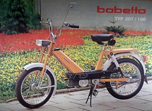

A Motokov Engedélyezte az újabb fejlesztéseknek így a mérnökök nekiálltak gőz erővel tervezni egy új típust, amit 207 esnek neveztek el (ez a motor volt az, amiből az egyik legtöbbet adták el csak a 210 előzi meg a sok különböző kiadás miatt). Minden országban mások voltak a jogszabályok így a megengedett végsebeségek is a kis motornál (pl. a németeknek és a hollandoknak külön egy 25 km/h végsebességű változatot, az Egyesült Államokba egy 30 km/h-s változatot, a hazai piacra pedig 40 km/h-s változatot terveztek.

A magyar utakra adtak ki "Magyar" kiadásúakat, amit onnan lehet meg ismerni, hogy csak is rugós ülésű típusok voltak míg a Csehszlovák típusokon volt rugós meg tömör gumi ülés is. A 207-esek új oldallemezt is kaptak és elhagyták a kis láncvédőt. Ez olcsóbbá tette a mopedet, de sajnos pont ott nem volt takarva a lánc, ahol felcsapja a szennyeződést. Innentől fogva a 207-es Babetták jellemzőjévé vált a csomagtartó alján jobb oldalt az olajsár.A 207-es típusok kiadása közben, amit változtattak néha az a kormány és tanksapka (benzin tank) de tudomásom szerint nem történt ezeken kívül érdemleges változás.
JAWA Babetta 207 Öszes hivatalos tipusa: JAWA Babetta 207.100,JAWA Babetta 207.108,JAWA Babetta 207.200,JAWA Babetta 207.300,
JAWA Babetta 207.400,JAWA Babetta 207.500,